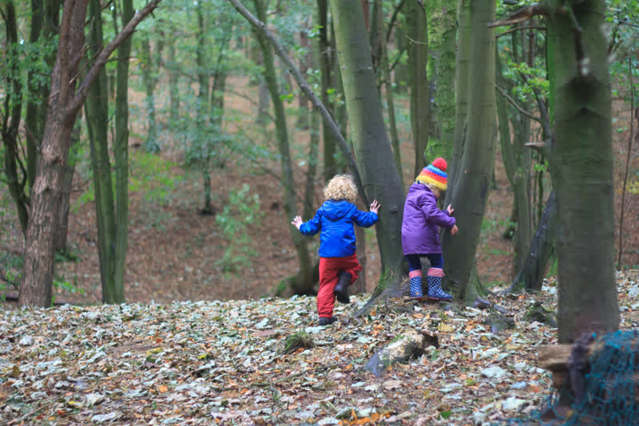
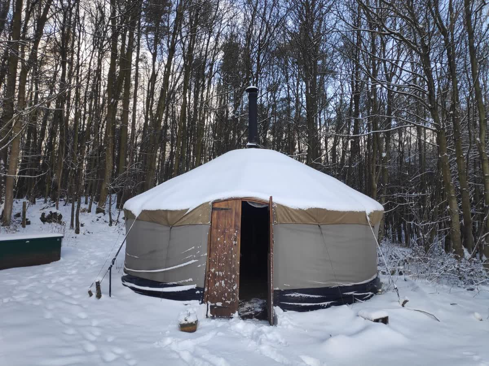

Open Monday to Friday Fridays until 1pm
The Secret Garden Outdoor Nursery
A fully outdoor nursery in 25 acres of woodland north of Letham, Fife. For children aged 3 to 5, all year round.
- Ages
- 3 to 5 Children start once they’ve turned 3
- Open
- 8:30am to 5:10pm Monday to Thursday. Fridays 8:30am to 1pm. 47 weeks a year.
- Funding
- Yes, through Fife Council Funded, paid or split places
- Places
- Phone to check We take new children all year
- Inspection
- Very good (5 out of 6) in all four areas Care Inspectorate, May 2023Read our inspection report

Closed for children Friday 13 November 2026 is a staff training day. Please make other arrangements.
Winter closure We’re closed from Monday 21 December 2026 to Friday 1 January 2027. The last day of term is Friday 18 December. We’re back on Monday 4 January.
Already with us?
For parents at the Secret Garden
See it before you visit
From the park to the woods
There’s no front door here. This is the walk your child will take each day, in real photos of our woodland.
-
Stop 1 of 4
Setting off

Rucksacks on and sit mats packed, the group sets off together. Each day starts in the park. Children arrive dressed for the weather, then we all walk up the hill to the woods.
- Drop-off and pick-up are in the park. Phone to check where to meet.
- Arrive fully dressed, so your child can go straight into play.
- In winter, children need a head torch for the walk back down in the dark.
Waterproofs over wellies, please Our walk has some wonderful puddles.
-
Stop 2 of 4
Through the willow arch: the yurt

The yurt, seen through the willow arch. 
Children’s own chalk drawings on the yurt wall. The yurt is our shelter from rain, snow and wind. Tarps give more cover around the woods.
- The yurt has a chimney, so it can be warmed by a fire.
- A blanket-lined tent for any child who needs a rest in a quiet corner.
- Toilets and handwashing: ask us when you visit.
-
Stop 3 of 4
Round the fire

Sit mats, wellies and rucksacks by the log seats at the fire. Children help to gather sticks and build the fire, inside a fire safety circle. It’s where we warm up, eat and hear stories.
- Lunch comes from home. In winter, a warm lunch in a flask is best.
- We provide snack, often with fruit and vegetables the children grow.
- An adult tells a story after lunch every day.
-
Stop 4 of 4
The woods

The woods have slopes, leaf piles and trees to climb. Children play freely across the woods: building dens, climbing, digging in mud and planting.
- 25 acres of woodland, north of Letham village.
- Raised beds where children grow food for snack.
- Staff stay close and calm, “like trees”: near enough to help, without taking over the play.



A day at nursery
A day in the woods, in every weather
We go out in rain, wind and snow. The children help decide what we need each day.
- MorningDrop-off in the parkArrive dressed for the weather. A warm breakfast first helps.
- MorningWalk up the hill togetherAt a good pace, so everyone warms up.
- MorningCircle time“What will we need today?” Children help plan for the weather.
- All dayFree play in the woodsDens, climbing, mud, fire and planting, led by the children’s ideas.
- MiddayLunch, then a storyLunch from home, by the fire or in the yurt. One adult tells a story.
- AfternoonPlay, yoga or an adventureSometimes to another part of the woods.
- End of dayBack down the hill to the parkHome time. In winter, we use head torches.
We run two groups with slightly different start and finish times. Phone to check your child’s times. On Fridays we close at 1pm.
Who’ll look after your child
Our team, and what inspectors found
Each group has its own team of woods practitioners. Parents can read every grade from our last inspection.
The people your child will know
Ellis Goodfellow
Care Manager and Lead Practitioner
Naomi Ellis-Morton
Senior Woods Practitioner, Buttercups group
Karen Valentine
Senior Woods Practitioner, Buttercups group
Anna Kinross
Senior Practitioner, Foxgloves group
Vicky Hobba
Administration Manager
Plus woods practitioners in each group and a sessional team. Ask us about key workers and staff ratios when you visit.
Meet the whole teamCare Inspectorate grades
- How good is our care, play and learning?5 Very good
- How good is our setting?5 Very good
- How good is our leadership?5 Very good
- How good is our staff team?5 Very good
Grades run from 1 (unsatisfactory) to 6 (excellent).
Read our latest inspection reportFees and funding
What it costs
New children come at least two days a week. Funded hours from Fife Council can cover some or all of your child’s days.
A full day
Monday to Thursday, 8:30am to 5:10pm.
A Friday session
Friday, 8:30am to 1pm.
Hours from Fife Council
We’re a Fife Council partner provider. Funded hours are free to you. Apply through Fife Council.
Visit and join
How to start
We take new children all year round. The first step is a phone call or an email.
- Contact the officePhone 07732 048289 or email us. We’ll send you an information and enrolment pack.
- Visit the woodsCome with your child to see the nursery in action. They can be under 3 for a visit.
- Send back the enrolment packYour place on the waiting list is confirmed once the pack is complete.
- Start once your child is 3New children come for at least two days a week. Ask us how settling in works.
Hours and directions
Opening hours and how to find us
Open Monday to Friday Fridays until 1pm
| Monday | 8:30am to 5:10pm |
|---|---|
| Tuesday | 8:30am to 5:10pm |
| Wednesday | 8:30am to 5:10pm |
| Thursday | 8:30am to 5:10pm |
| Friday | 8:30am to 1pm |
| Saturday | Closed |
| Sunday | Closed |
Open 47 weeks a year. See term dates and closures.
Find us
- The Woodland Hive
c/o Letham Village Hall
Letham, Cupar KY15 7RS - The village hall is our postal address. The nursery is in the woods north of the village. Phone to check where to meet for your visit.
- 07732 048289
- enquiries@secretgarden
outdoor-nursery.co.uk
Visits for practitioners
We run visitor sessions in the woods for people working with young children, from 11:30am to 2pm, at £35 a person.